ECON 2316 • Microeconomic Theory • Chapter 6
Income, Substitution, and Demand
The Slutsky decomposition — and why a 45% energy-price spike calls for a cash transfer, not a price cap.
Dr. Richeng Piao
Department of Economics
Northeastern University — 100 min
Learning Objectives
By the end of class today, you will be able to…
6.1
Distinguish the substitution and income channels by which a price change moves Marshallian demand — and articulate why a price cap and a lump-sum transfer are not equivalent policies. (Bloom L4)
6.2
Set up the expenditure-minimization problem; derive Hicksian (compensated) demand \(h_i(p, \bar u)\) and the expenditure function \(e(p, \bar u)\); state the duality identity. (Bloom L4)
6.3
Derive and apply the Slutsky equation \(\partial x_i/\partial p_j = \partial h_i/\partial p_j - x_j \, \partial x_i/\partial I\); decompose a Cobb-Douglas and a quasilinear price change. (Bloom L5)
6.4
Classify goods as normal, inferior, or Giffen using the sign pattern of substitution and income effects; diagnose Carlos's canned-soup decomposition, the Chen family's Hunan-rice Giffen, and Maya's labor-supply knife-edge. (Bloom L5)
6.5
Read the empirical decomposition of the 2022 US gas-price spike and the Engel-curve evidence from the BLS CEX as confirmation (not assumption) of the Slutsky structure. (Bloom L4)
Ch 5 refresher — three changes to the budget constraint
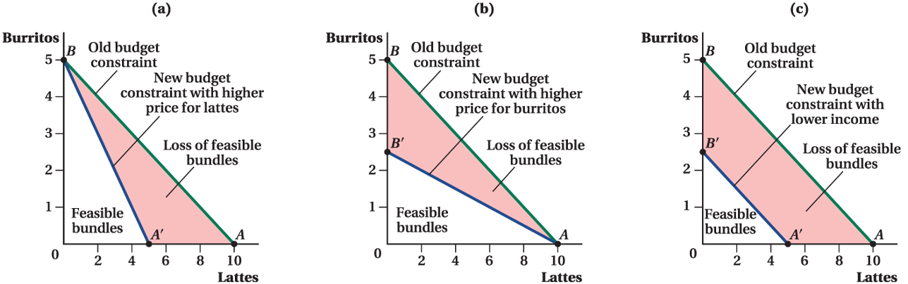
(a) \(2 \times p_L\) (lattes)
\(Q_B = 5 - \tfrac{1}{2} Q_L \;\to\; 5 - Q_L\)
Pivot around \(B\); slope steepens.
(b) \(2 \times p_B\) (burritos)
\(Q_B = 5 - \tfrac{1}{2} Q_L \;\to\; 2.5 - \tfrac{1}{4} Q_L\)
Pivot around \(A\); slope flattens.
(c) \(\tfrac{1}{2} \times\) Income
\(Q_B = 5 - \tfrac{1}{2} Q_L \;\to\; 2.5 - \tfrac{1}{2} Q_L\)
Parallel inward shift; same slope.
Why this matters today. Slutsky decomposes a price change into a compensated pivot (panel a or b at constant utility) plus a parallel income shift (panel c) — the geometry of Ch 5 stacked.
April 2022 — the UK energy-price cap
+45%
cap raised in real terms
−14%
average household energy use
−6%
welfare loss, bottom half (unmitigated)
The policy choice: cap the price at last year's level, or let prices rise and hand low-income households cash transfers. Two policies, two different levers — and as Levell, O'Connell & Smith (IFS / Cowles, 2024) document in transaction-level data:
Own-price elasticity of energy demand \(\;\varepsilon_D \in [-0.45,\, -0.31]\) — strong substitution channel. Expenditure elasticity rises from 0.4 (bottom half) to 0.8 (top quintile) — income channel matters too, and unevenly.
Two channels, one price spike
Substitution channel
Energy is now expensive relative to everything else. The household
- turns down the thermostat,
- weatherizes windows,
- runs the dishwasher off-peak,
- defers the next clothes-dryer purchase.
This response would happen even if real income were unchanged.
Income channel
The price spike makes the household effectively poorer (real income falls).
A poorer household cuts spending everywhere — including on necessary energy use that was not substitution-driven at all.
This response would happen even at unchanged prices if income fell by the same dollar amount.
Policy punchline. A price cap mutes substitution (preserves the old price, so the household conserves less). A targeted lump-sum transfer leaves the price signal sharp but neutralizes the income effect for households that need it. The two policies are not equivalent.
Poll #1: Cap vs. cash — which mitigates welfare loss more?
A low-income UK household faces a 45% energy-price spike. Government has a fixed budget. Which policy mitigates the household's welfare loss MORE, holding the policy cost the same?
60 sec to vote
Answer: D — the decomposition is the diagnostic
Why C is the trap. Same government dollars can produce different welfare outcomes depending on whether substitution or income dominates the household's response. Cap is better if the household is very inelastic (substitution small); cash is better if the household is elastic and the cap would distort behavior away from conservation.
The chapter builds the Slutsky equation — the algebra that decomposes any observed Marshallian response into its substitution and income parts. Once we have it, the policy question has a quantitative answer.
PART 1B · §6.1 Pure-income changes
10 min · Warm-up: dissect the income channel alone, before we add the price channel
§6.1.1 — Pure-income thought experiment: Sam's raise
Sam allocates \$60/month between Netflix (\$4) and Spotify (\$6). Cobb-Douglas with \(\alpha = 1/3\). His income doubles to \$120 — neither price changes.
Budget: \(p_1 x_1 + p_2 x_2 = I\) shifts outward in parallel.
- Both axes rise. Sam spreads new income across both goods (he was buying both already).
- Slope preserved: \(-p_1/p_2 = -2/3\) unchanged — no relative-price move.
- Higher indifference curve: \(IC_0 \to IC_1\). Strictly higher utility (monotonicity, §4.1).
Cobb-Douglas optima
Constant-share rule: \(x_1^M = \alpha I/p_1\), \(x_2^M = (1{-}\alpha) I/p_2\).
At \(I=60\): \(A = (5,\, 6.67)\).
At \(I=120\): \(B = (10,\, 13.33)\).
Both quantities double — Cobb-Douglas income elasticity \(=1\) on each good.
Figure 6.12 (manuscript) shows two parallel budget lines and the bundles \(A \to B\) moving northeast.
Figure 6.12 — Sam's response to an income increase
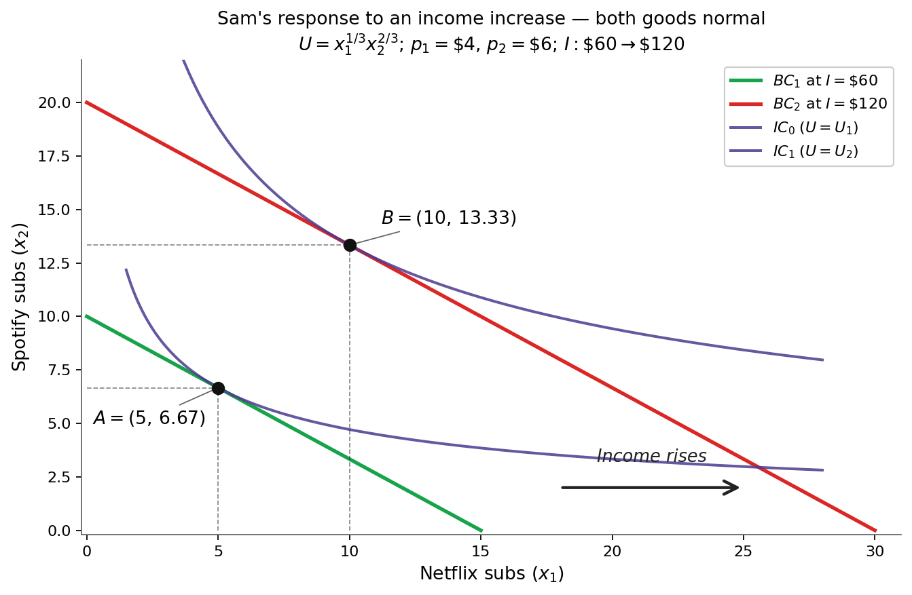
Reading the picture:
- BC1 → BC2: parallel outward shift — same slope \(-p_1/p_2\), bigger feasible set.
- A → B: both Netflix and Spotify rise (both normal under Cobb-Douglas).
- IC0 → IC1: Sam reaches a strictly higher utility.
- For Cobb-Douglas, the IEP through \(A\) and \(B\) is a ray from the origin with slope \((1{-}\alpha) p_1 / (\alpha\, p_2) = 4/3\).
Empirical claim. Income doubled, both quantities doubled. Both income elasticities \(=1\) — the Cobb-Douglas signature.
Figure 6.13 — When one good is inferior (Carlos's case)
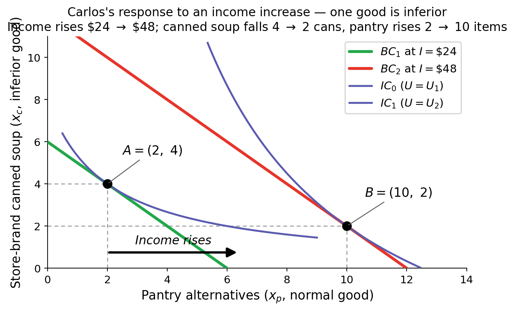
Contrast with Sam:
- Same parallel BC shift — income channel only, slope \(-p_p/p_c\) unchanged.
- Pantry alternatives \(\uparrow\): 2 \(\to\) 10 items — normal good.
- Canned soup \(\downarrow\): 4 \(\to\) 2 cans — inferior good: \(\partial x_c / \partial I < 0\).
- Optimum moves down-right (not up-right) — the income expansion path bends backward on the inferior axis.
Carlos <-> W6.3 preview. Same character returns in §6.4.3 with a price shock on canned soup — Slutsky decomposition shows a perverse income effect that partially offsets substitution.
§6.1.2 — Income elasticity: necessity, luxury, inferior
\[\varepsilon_I \;=\; \frac{\Delta x / x}{\Delta I / I}\;=\;\frac{\partial x}{\partial I}\cdot\frac{I}{x}.\]
Sign of \(\varepsilon_I\) sets normal vs. inferior; magnitude inside the normal range further splits necessity vs. luxury.
Necessity
\(0 < \varepsilon_I < 1\)
Quantity rises with income, slower than income. Budget share falls. Examples: toothpaste, salt, food-at-home, electricity.
Luxury
\(\varepsilon_I > 1\)
Quantity rises faster than income. Budget share rises. Examples: jewelry, first-class tickets, vacation homes, restaurant meals.
Inferior
\(\varepsilon_I < 0\)
Quantity falls as income rises. Trade up to a preferred alternative. Examples: store-brand canned soup, bus rides, used cars, ramen.
Adding-up constraint. Not every good can be inferior simultaneously. If Sam cuts bus rides when his income rises, the saved dollars go somewhere. At least one good in the bundle must be normal.
Normal vs. inferior can flip with income level. A used car is normal at low income (any car beats the bus) and inferior at high income (new cars supplant used ones).
Income elasticity of demand — the spectrum

Inferior — \(\varepsilon_I < 0\)
Formula
\(\varepsilon_I = \dfrac{\%\Delta Q_d}{\%\Delta I}\)

Luxury — \(\varepsilon_I > 1\)
Inferior (\(\varepsilon_I < 0\))
Normal necessity (\(0 < \varepsilon_I < 1\))
Luxury (\(\varepsilon_I > 1\))
−∞
0
1
+∞
Examples
Store-brand canned soup (Carlos, W6.3), bus rides, used cars
Examples
Food-at-home (Aguiar & Bils \(\varepsilon_I \approx 0.4\)), electricity, toothpaste
Examples
Restaurants (Aguiar & Bils \(\varepsilon_I \approx 1.3\)), vacations, jewelry
You try — Sam's income elasticity
Setup
Sam's income rises from \$60 to \$90 (\(\Delta I/I = +50\%\)). His Netflix subs jump 5 \(\to\) 7; Spotify 6.67 \(\to\) 10. Necessity, luxury, or right at the boundary?
Compute \(\varepsilon_I\) for each good. Press → to reveal.
Netflix
\(\Delta x_1/x_1 = (7-5)/5 = 40\%\)
\(\varepsilon_I^{\text{Netflix}} = 40/50 = \mathbf{0.80}\)
Necessity (\(0 < \varepsilon_I < 1\)). Budget share falls as Sam's income rises.
Spotify
\(\Delta x_2/x_2 = (10-6.67)/6.67 = 50\%\)
\(\varepsilon_I^{\text{Spotify}} = 50/50 = \mathbf{1.00}\)
Unit-elastic — the Cobb-Douglas signature. Budget share constant.
Pure Cobb-Douglas would put \(\varepsilon_I = 1\) on both goods. Netflix's 0.80 reads as a slight discretionary-purchase signature at low income — small wedge off the unit-elastic benchmark.
§6.1.3-4 — Income Expansion Path and Engel curve
Income Expansion Path (IEP)
Trace the consumer's optimum bundle from \(I = 0\) (the origin) through every increasing income level. Connect the tangencies.
- Two normal goods: IEP slopes upward — every income increase moves the bundle northeast.
- Normal + eventually-inferior: IEP bends backward on the inferior axis past some income threshold.
Lives in the same \((x_1, x_2)\) plane as the indifference curves.
Engel curve (Engel, 1857)
Replot: income on the vertical axis, quantity of one good on the horizontal. One point per IEP point.
- Positive slope ⇒ normal good at that income.
- Negative slope ⇒ inferior at that income.
- Backward bend ⇒ normal-to-inferior transition.
Engel curve = empirical workhorse. Household surveys (BLS CEX, USDA ERS) record income + spending; plotting the data gives the Engel curve directly. The slope at any point estimates \(\varepsilon_I\) at that income range. T&D 6.1 below uses BLS CEX 2024 food-share data to verify Engel's law (food share falls with income).
Figure 6.14 — The income expansion path
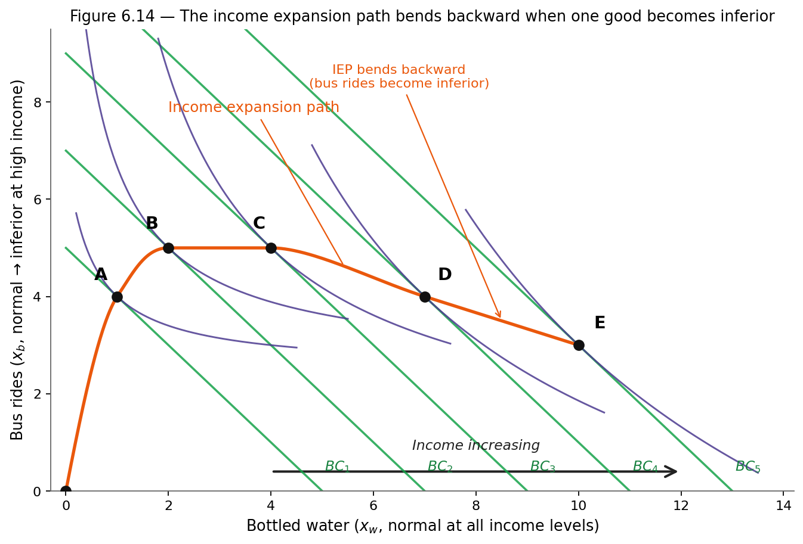
Reading the IEP:
- Five budget lines BC₁ → BC₅ (parallel, same slope — only income rises).
- Five optima A→E are the tangencies on five indifference curves.
- A → B → C: both quantities rise — bus rides still normal.
- C → D → E: bus rides fall as bottled water rises — bus rides become inferior.
- The IEP bends backward on the bus-rides axis past D — the normal-to-inferior transition.
Information packed in one curve: for each good, whether it's normal or inferior at each income level — just by reading the IEP's direction.
Figure 6.15 — Engel curves: IEP replotted, income on the y-axis
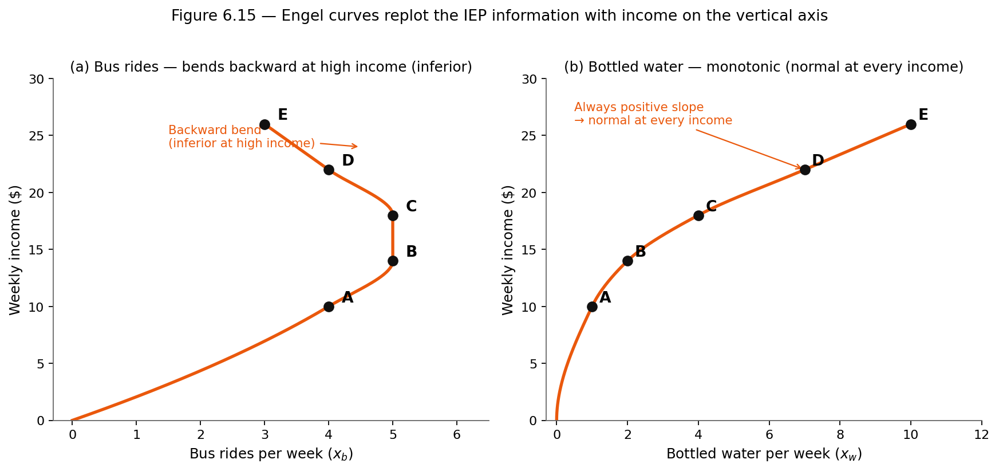
Panel (a): bus rides
Slope positive A→C, negative C→E — the backward bend marks the normal-to-inferior transition.
Panel (b): bottled water
Slope positive everywhere. Bottled water is normal at every income level — no bend.
Empirical workhorse: income on the vertical axis is directly observable; slope at any point = local \(\varepsilon_I\). BLS CEX data plotted this way gives Engel's law (food share falls with income).
§6.1.6 Application — Aguiar & Bils on restaurants as luxury
Aguiar & Bils (2015, AER, DOI 10.1257/aer.20120599) estimated Engel curves on CEX + PSID data for a wide range of consumer goods. Two headline findings:
Food at home
\(\varepsilon_I \approx 0.4\)
Necessity. +10% income ⇒ +4% spend.
Restaurant meals
\(\varepsilon_I \approx 1.3\)
Luxury. +10% income ⇒ +13% spend.
Why it matters
3-to-1 luxury-vs-necessity gap. As US incomes have risen over the past 50 years, restaurant spending has grown about three times faster than grocery spending.
The long-run US restaurant boom — chains, delivery apps, ghost kitchens — is partly the mechanical consequence of an \(\varepsilon_I = 1.3\) good in a rising-income economy.
Application 6.1 below (the gas-elasticity story) is the price-channel analog. Aguiar & Bils give the income-channel benchmark — two empirical anchors for the chapter's two channels.
PART 2 · §6.2 How price changes affect consumption choices
Substitution and income effects on an indifference map
Deriving a demand curve
Just as income shifts the bundle (§6.1), changes in relative prices — holding income constant — also reshape consumer choices. We now build Sam's individual demand curve directly from his utility model.
The recipe
- A demand curve maps quantity demanded to price, holding income and other prices fixed.
- To trace it, change one price on the indifference-map / budget-constraint figure and read off the new optimum.
- Each price → one optimum → one \((Q, P)\) point on the demand curve.
- Connect the points to get the consumer's demand curve for that good.
The observed price represents the consumer's maximum willingness to pay for the last unit consumed — the inverse-demand interpretation we use in welfare analysis (Ch 2 CS, Ch 6.7 CV).
Figure 6.16 — Building Sam's Netflix demand curve
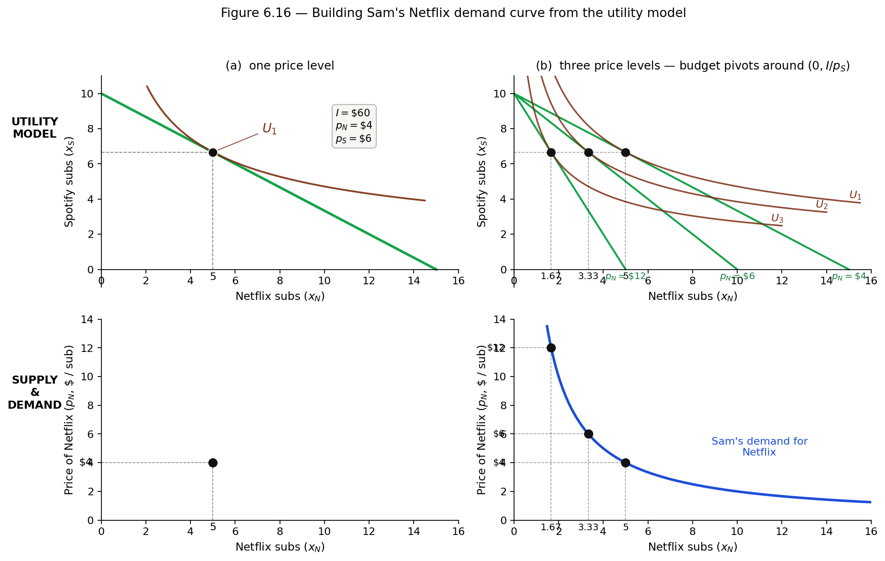
Reading: top = utility model (each price → budget pivots → new tangency); bottom = derived demand. Three points trace Sam's curve: \((5, \$4),\, (3.33, \$6),\, (1.67, \$12)\).
Shifts in the demand curve
Movement along the demand curve answers “more Netflix at lower price.” A shift of the whole curve answers a different question: at the same price, has the consumer's demand changed?
What shifts the curve
- Preferences change (taste shock; new info; ad campaign).
- Income changes (the §6.1 channel).
- Prices of other goods change (cross-price effects).
Sam's preference shock
Suppose Sam starts listening to more new music (podcasts, lossless audio) and values Netflix less, relatively speaking. His Cobb-Douglas weight \(\alpha\) on Netflix drops from \(1/3\) to \(1/5\).
At every Netflix price, Sam wants fewer Netflix subs — the whole demand curve shifts inward.
Mechanism: with lower \(\alpha\), Sam's indifference curves flatten in the Netflix direction — tangency on the same budget line now sits further left.
Figure 6.17 — A preference change shifts Sam's demand
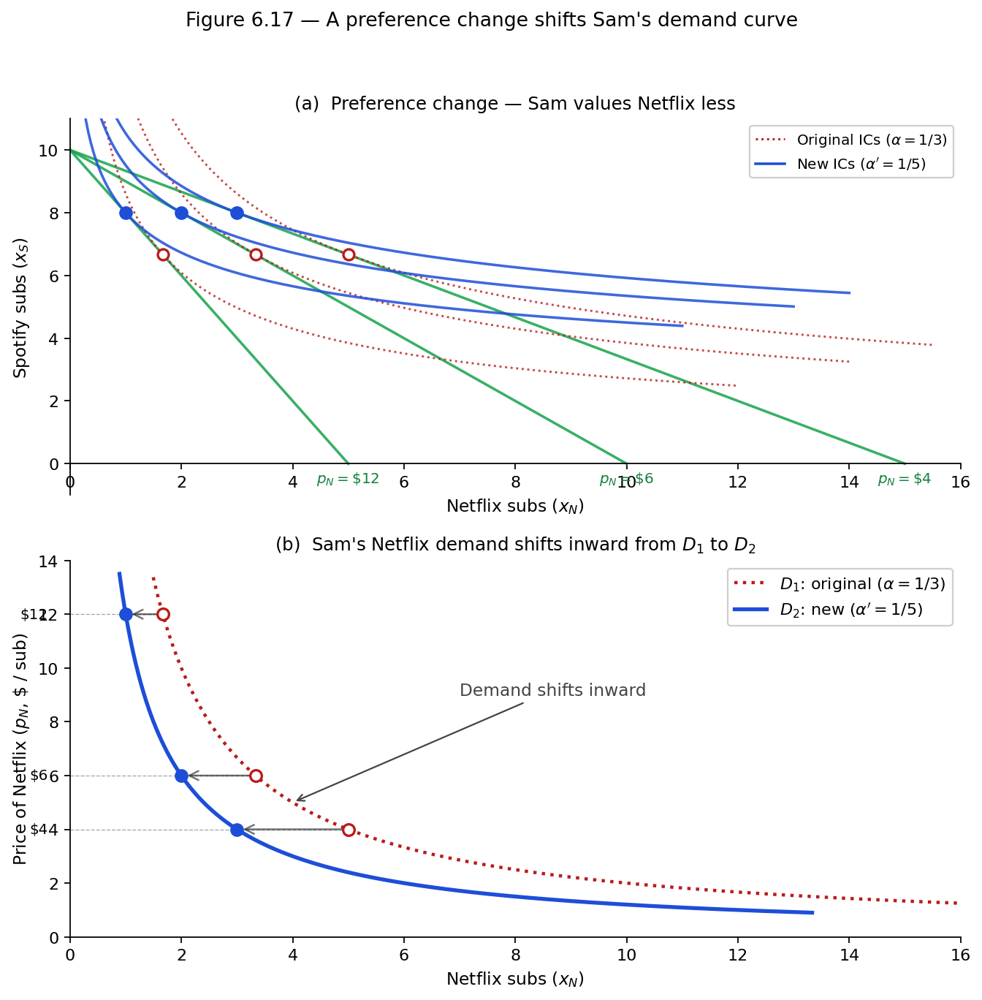
Inward shift. Same prices, same income — just a flatter IC family. At \(p_N\in\{\$4, \$6, \$12\}\), Sam's quantity drops \(5\!\to\!3\), \(3.33\!\to\!2\), \(1.67\!\to\!1\). Demand curve \(D_1 \to D_2\).
Case study 1 — Capuchin monkeys obey the law of demand
Chen, Lakshminarayanan & Santos (2006, JPE).
- Concept: Capuchin monkeys were taught to trade metal washers as “money” for foods (Jell-O cubes, grapes).
- Price change: The Jell-O “price” rose — originally 3 cubes per washer, then only 1 cube per washer (3× price hike).
- Behavior: Monkeys responded exactly as theory predicts — they substituted toward the cheaper good (grapes) and consumed less Jell-O. The law of demand isn't a human cultural artifact; it falls out of optimization.
Lesson: the SE+IE machinery isn't species-specific. Any optimizing agent with stable preferences over bundles obeys the same law.
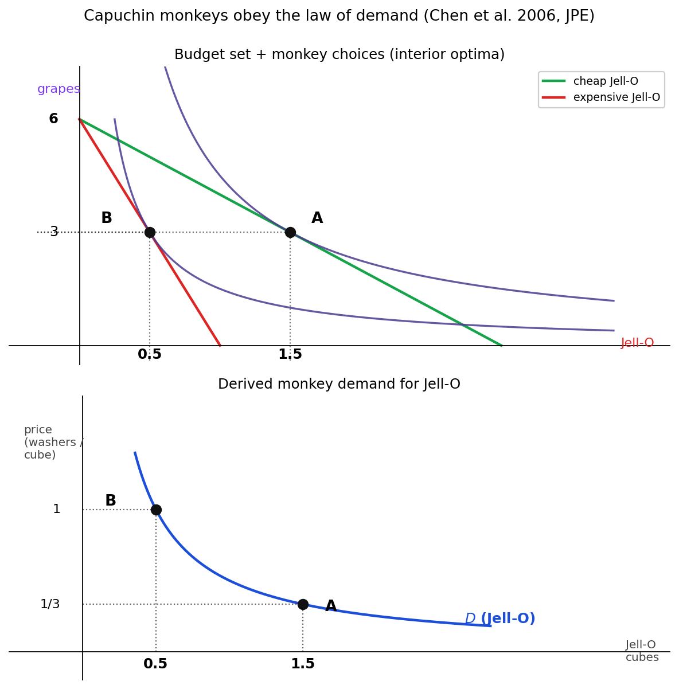
Case study 2 — Rats show inferior vs. luxury goods
Kagel, Battalio & colleagues, 1970s–80s (animal-economics tradition).
- Concept: Rats in a Skinner box could press levers to receive either root beer (the preferred treat) or bitter quinine water. Daily presses available = the “budget.”
- Income change: Researchers cut the daily press allowance — rats became “poorer.”
- Behavior: When made poor, rats consumed less root beer and more quinine water. Root beer behaves as a luxury for rats; quinine water as an inferior good.
Lesson: the §6.1.2 taxonomy (normal/inferior, necessity/luxury) is a fact about preferences and budgets — reproducible in non-human animals.
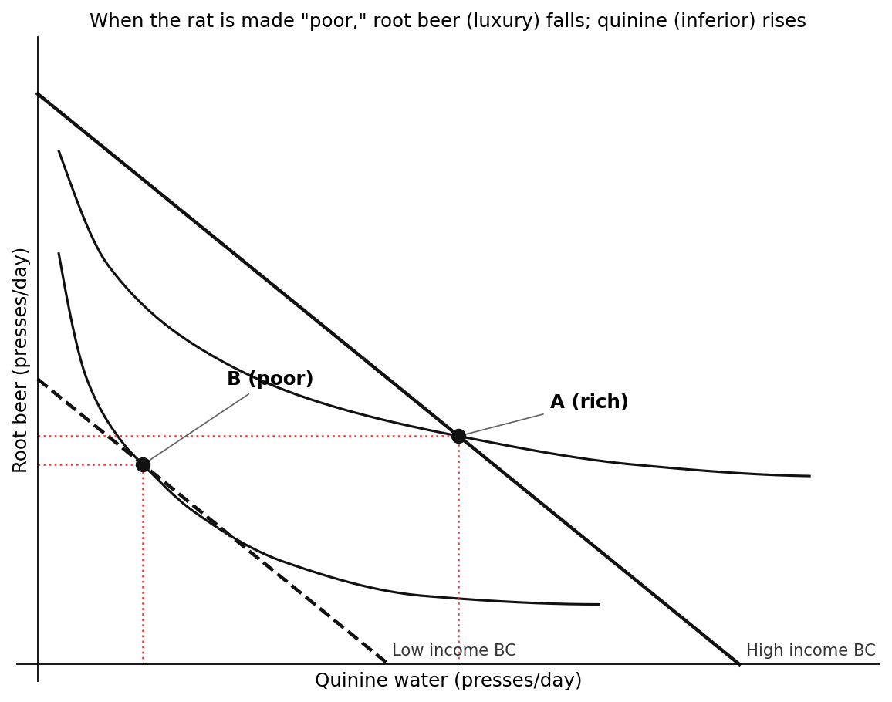
Starting point — what happens when the price changes?
Setup — meet Alex
Alex picks \(E_1\) (tangent to \(BC_1\) on \(U_1\)). Price of good 1 falls; new optimum \(E_2\) on higher curve \(U_2\).
The BTS question
Why did Alex re-optimize? How is the consumer reading the price-change signal? What logic moved \(E_1\) to \(E_2\) behind the scenes?
Two things changed at once:
- Relative prices ⇒ substitution channel.
- Purchasing power ⇒ income channel.
Next three slides: isolate substitution, isolate income, then recombine as Total = Sub + Inc.
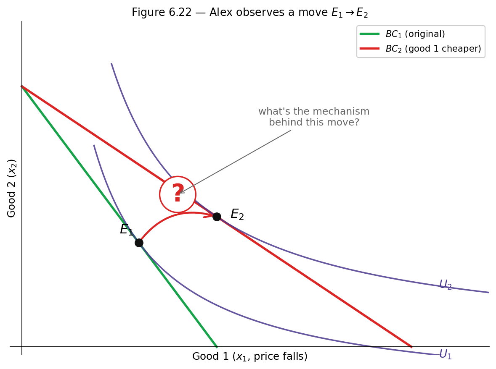
Substitution effect — isolate channel #1
Alex's thought experiment. Hold Alex's utility at \(U_1\) (the original level). At the new price ratio, what bundle would Alex pick?
The trick
Shift \(BC_2\) inward (same new slope) until it's tangent to the old IC \(U_1\). Call it \(BC'\). Tangency point = \(A'\).
Substitution effect = movement \(A \to A'\) along the original indifference curve \(U_1\). Pure relative-price reallocation; real utility constant.
Always non-positive in own price. Good 1 became relatively cheaper, so Alex substitutes toward good 1. This is a theorem — convexity of preferences guarantees the direction.
In the figure. Good 1: \(3 \to 4\) (\(+1\) sub). Good 2: \(4 \to 2.8\) (\(-1.2\) sub).
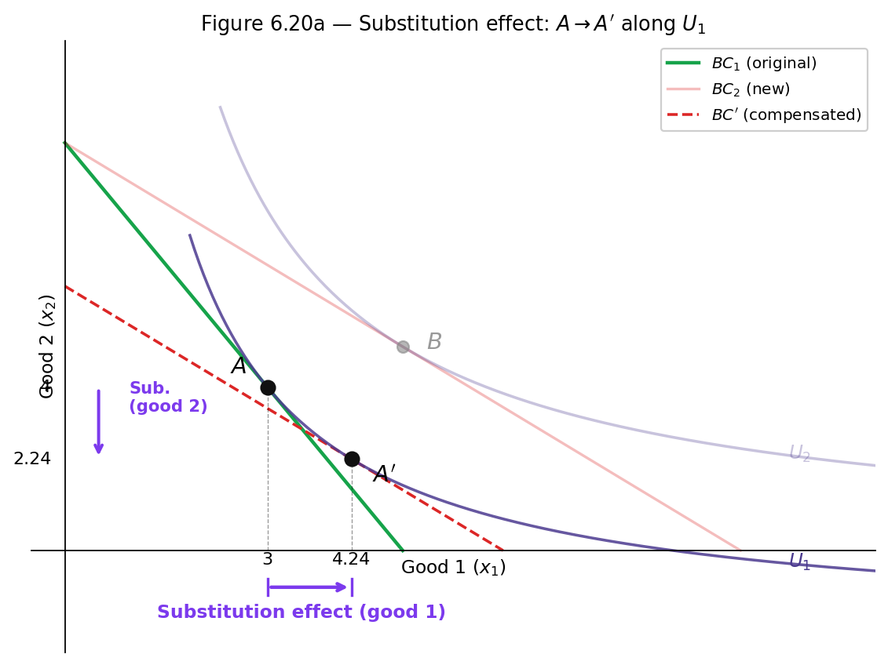
Income effect — isolate channel #2
Alex's second move. The price fell, so Alex's real purchasing power increased: with \(BC_2\), Alex can afford a bigger bundle than \(BC'\) allows.
The shift
\(BC' \to BC_2\): a parallel shift outward (same new slope). Alex moves from \(A'\) on \(U_1\) up to \(B\) on the higher \(U_2\).
Income effect = movement \(A' \to B\), the change in consumption from the purchasing-power change alone. Relative prices held fixed.
Sign can flip: positive for a normal good (reinforces substitution), negative for inferior (partially offsets), large negative for a Giffen good (overpowers substitution).
\(\text{Total} \;=\; \text{Sub} \;+\; \text{Inc}\)
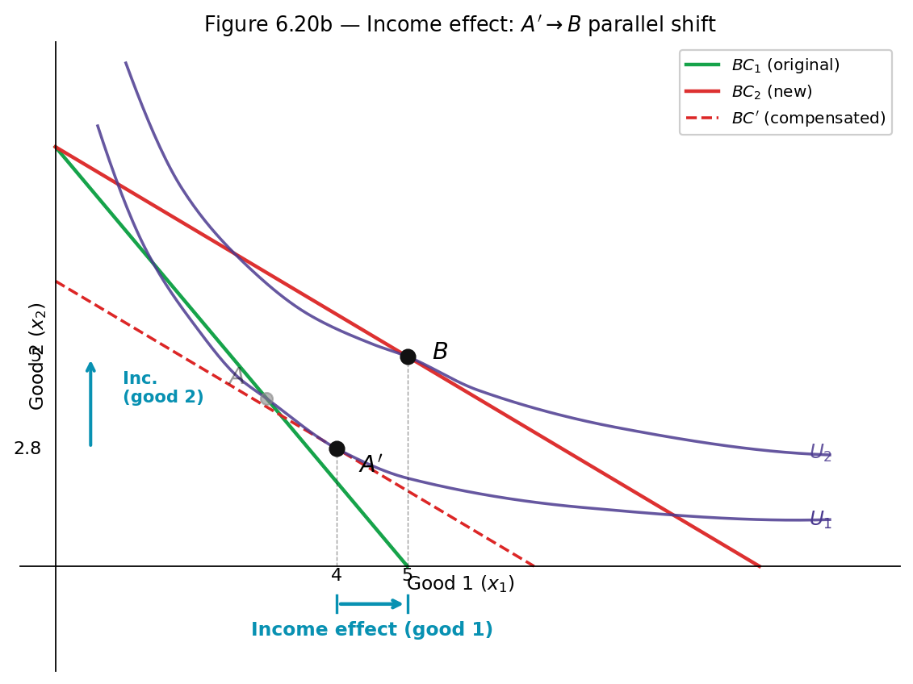
Combined picture — total effect of a price fall
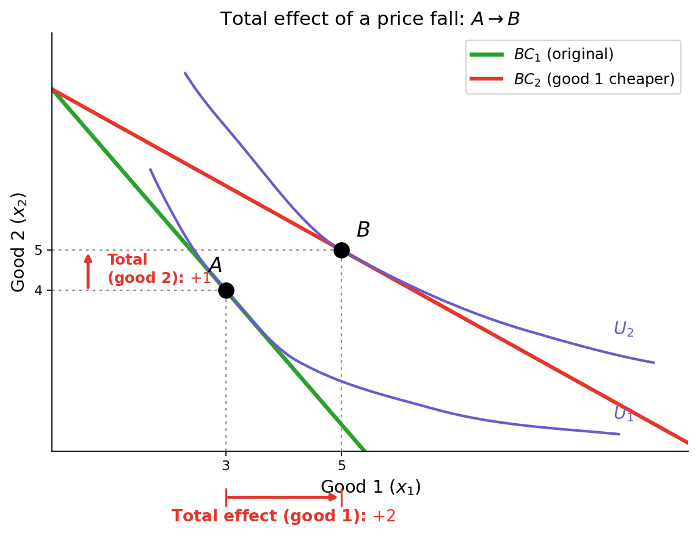
Putting it back together:
- \(BC_1 \to BC_2\): budget pivots out as good 1 becomes cheaper.
- Optimum: \(A=(3, 4) \to B=(5, 5)\) on a higher IC \(U_2\).
- Total effect on good 1: \(3 \to 5\) (rises by 2).
- Total effect on good 2: \(4 \to 5\) (rises by 1).
What data records. Only the total effect \(A \to B\). Substitution and income are not directly observable — they require the compensated-budget thought experiment.
Next slide formalizes the recipe in three steps.
Three steps to compute substitution + income effects
Start from the consumer's optimum bundle \(A\) on \(BC_1\) and \(U_1\):
- Draw the new budget constraint \(BC_2\) (the price change rotates / pivots \(BC_1\)). Find the new optimum bundle \(B\) on the higher indifference curve \(U_2\).
- Draw a line parallel to \(BC_2\) (same new slope) but shifted inward until it's tangent to the old IC \(U_1\). Call it \(BC'\). Its tangent point is \(A'\).
-
Read off the decomposition.
- Substitution effect = \(A \to A'\) (along \(U_1\)).
- Income effect = \(A' \to B\) (parallel shift to \(U_2\)).
- Total effect = \(A \to B\) = Sub + Inc.
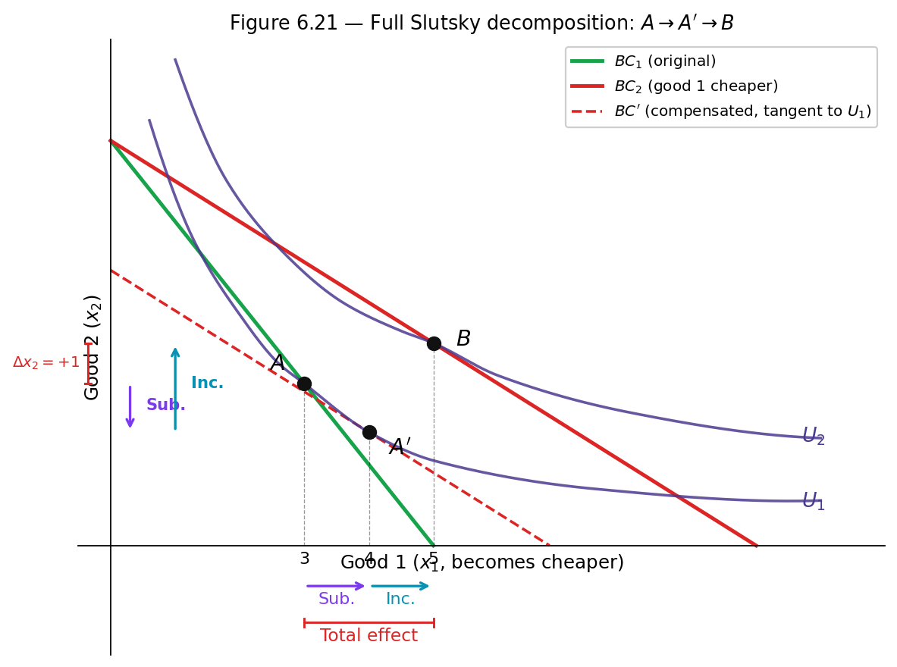
You try — inferior good case
Setup. Alex consumes steak (normal) and ramen (inferior). The price of ramen falls. Press → for each step.
Step 1 — Substitution effect
- Ramen relatively cheaper ⇒ \(Q_{\text{ramen}} \uparrow\) (+)
- Steak relatively expensive ⇒ \(Q_{\text{steak}} \downarrow\) (−)
Step 2 — Income effect
Real purchasing power rises:
- Steak (normal): \(Q_{\text{steak}} \uparrow\) (+)
- Ramen (inferior): \(Q_{\text{ramen}} \downarrow\) (−)
Step 3 — Which dominates?
- Steak: Inc \(+1.25\) > Sub \(-0.5\) ⇒ net +0.75
- Ramen: Sub \(+1.5\) > Inc \(-0.5\) ⇒ net +1.0
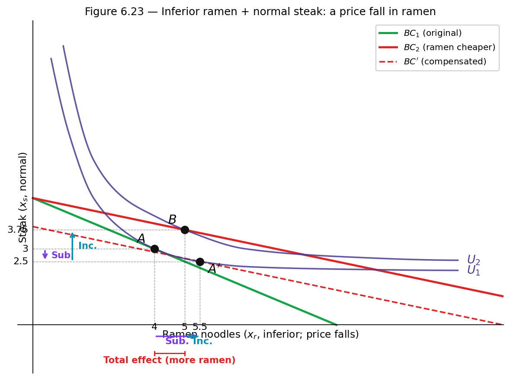
Two problems, one optimum: primal vs. dual
PRIMAL (Ch 5)
Utility maximization at given prices and income.
\[\max_{x_1, x_2 \geq 0}\; U(x_1, x_2)\;\;\text{s.t.}\;\; p \cdot x \leq I.\]
Output: Marshallian demand \(x_i^M(p, I)\) + indirect utility \(v(p, I) = U(x^M)\).
DUAL (today)
Expenditure minimization at given prices and a utility floor.
\[\min_{x_1, x_2 \geq 0}\; p \cdot x \;\;\text{s.t.}\;\; U(x) \geq \bar u.\]
Output: Hicksian (compensated) demand \(h_i(p, \bar u)\) + expenditure function \(e(p, \bar u) = p \cdot h\).
Why the dual matters. The Hicksian demand isolates the substitution channel by construction — utility is held fixed, so any price-response is pure relative-price reallocation. That isolation is what makes the Slutsky decomposition possible.
The expenditure function \(e(p, \bar u)\)
\[e(p, \bar u) \;\equiv\; \min_{x \geq 0} \;\{\, p \cdot x \,:\, U(x) \geq \bar u \,\}\;=\; p_1 h_1(p,\bar u) + p_2 h_2(p, \bar u).\]
The minimum dollar cost of reaching utility \(\bar u\) at prices \(p\). The five properties that fall out of the definition:
1. Non-dec.
in each \(p_i\) — higher prices, weakly more cost.
2. HOD 1
in \(p\): \(e(\alpha p, \bar u) = \alpha\, e(p, \bar u)\). Inflate all prices, cost inflates the same.
3. Concave
in \(p\) — consumer can re-optimize when a price rises.
4. Continuous
in \((p, \bar u)\) — small changes, small cost changes.
5. Inc. in \(\bar u\)
reach a higher floor ⇒ pay more (locally non-satiated \(U\)).
Concavity intuition. If \(p_1\) rises, the consumer substitutes away from good 1 along the original indifference curve. So the cost rises by less than the “keep buying the same bundle” counterfactual — that's the definition of concavity.
Hicksian demand and the duality identity
Hicksian (compensated) demand
The expenditure-minimizing bundle at prices \(p\) and utility floor \(\bar u\):
\(h_i(p, \bar u) = \arg\min\,\{\, p \cdot x : U(x) \geq \bar u \,\}.\)
Read it as: “what bundle does the consumer buy when utility is held fixed and only relative prices change?” The Hicksian demand traces out a curve in \((p_1, x_1)\) space along a single indifference curve.
Duality identity
\[x_i^M(p,\, e(p, \bar u)) \;=\; h_i(p, \bar u).\]
At the same prices and the same utility floor, the Marshallian demand evaluated at the minimum cost \(e(p, \bar u)\) is exactly the Hicksian demand. Same bundle, two paths to it.
Why this is the lever. Differentiate the duality identity in \(p_j\) and you get the Slutsky equation in one line. The next part builds that derivation.
CalculusCorner 6.1 — Cobb-Douglas dual: setup
Problem
A consumer has Cobb-Douglas utility \(U(x_1, x_2) = x_1^{\alpha} x_2^{1-\alpha}\). Find the expenditure function \(e(p, \bar u)\) and the Hicksian demand \(h_1(p, \bar u),\, h_2(p, \bar u)\) for given prices \(p_1, p_2\) and utility floor \(\bar u\).
Set up the Lagrangian
\[\mathcal{L} = p_1 x_1 + p_2 x_2 - \mu\big(x_1^{\alpha} x_2^{1-\alpha} - \bar u\big).\]
Minimize cost; \(\mu \geq 0\) is the shadow value of a marginal utility unit.
Two FOCs
\(p_1 = \mu\, \alpha\, x_1^{\alpha-1} x_2^{1-\alpha}\)
\(p_2 = \mu\, (1-\alpha)\, x_1^{\alpha} x_2^{-\alpha}\)
Divide to eliminate \(\mu\): \(\;\dfrac{p_1}{p_2} = \dfrac{\alpha}{1-\alpha} \cdot \dfrac{x_2}{x_1}.\)
Next slide — solve for \(x_1, x_2\) on the indifference curve \(U = \bar u\), substitute into \(p_1 x_1 + p_2 x_2\).
CalculusCorner 6.1 — solve: closed forms drop out
From the tangency ratio:
\(x_2 = \dfrac{(1-\alpha)\, p_1}{\alpha\, p_2}\, x_1.\)
Plug into \(U(x_1, x_2) = \bar u\) and solve for \(x_1\):
\[h_1(p, \bar u) = \bar u \left(\frac{\alpha\, p_2}{(1-\alpha)\, p_1}\right)^{1-\alpha}.\]
\[h_2(p, \bar u) = \bar u \left(\frac{(1-\alpha)\, p_1}{\alpha\, p_2}\right)^{\alpha}.\]
Expenditure function
\[e(p, \bar u) = \bar u \left(\frac{p_1}{\alpha}\right)^{\alpha} \left(\frac{p_2}{1-\alpha}\right)^{1-\alpha}.\]
Sanity check. Verify properties of \(e\): non-decreasing in each \(p_i\) (powers are positive), HOD 1 in \(p\) (sum of exponents \(= 1\)), concave (product of powers of \(p\), exponents in \([0,1]\)), and linear in \(\bar u\). All five properties pass.
Returns in Slide 22: this \(e(p, \bar u)\) is the exact expression we differentiate when we run the Slutsky decomposition for Cobb-Douglas \(\alpha = 1/3\).
Poll #2: Which is FALSE about \(e(p, \bar u)\)?
For a locally non-satiated, continuous utility \(U\), which of the following statements about the expenditure function \(e(p, \bar u)\) is false?
60 sec to vote
Answer: B — \(e\) is concave in \(p\), not convex
Intuition. If \(p_1\) rises by 10%, the consumer substitutes away from good 1 along the indifference curve. So minimum cost rises by less than 10% — the cost function bends down (concave), not up (convex).
Other distractors. A, C, D are all true: \(e\) is non-decreasing in each \(p_i\), homogeneous of degree 1 in \(p\) (linear scaling of all prices scales cost linearly), and increasing in \(\bar u\) (higher utility floor needs more dollars).
PART 3 · §6.3 The Slutsky equation
25 min · The chapter's headline identity, two walkthroughs
The Slutsky equation
For any pair of goods \(i, j\), any consumer with smooth preferences, evaluated at the bundle that achieves utility \(\bar u = v(p, I)\):
\[\boxed{\;\frac{\partial x_i^M(p, I)}{\partial p_j} \;=\; \underbrace{\frac{\partial h_i(p, \bar u)}{\partial p_j}}_{\text{substitution effect}} \;-\; \underbrace{x_j^M(p, I) \cdot \frac{\partial x_i^M(p, I)}{\partial I}}_{\text{income effect}}.\;}\]
LHS: what the data show
How Marshallian (actual) demand responds to a price change. Both channels mixed.
RHS: the decomposition
Hicksian response (pure substitution) minus the dollar value of \(x_j\) times income response.
The income term is multiplied by \(x_j\) because a unit rise in \(p_j\) costs the consumer roughly \(x_j\) extra dollars to keep buying the original bundle — that's the “real income loss” we have to subtract back out.
CalculusCorner — derivation in three lines
Start from the duality identity
\[x_i^M\big(p,\, e(p, \bar u)\big) \;=\; h_i(p, \bar u).\]
Step 1. Differentiate both sides w.r.t. \(p_j\) (chain rule on LHS):
\[\frac{\partial x_i^M}{\partial p_j} \;+\; \frac{\partial x_i^M}{\partial I} \cdot \frac{\partial e(p, \bar u)}{\partial p_j} \;=\; \frac{\partial h_i}{\partial p_j}.\]
Step 2. Apply Shephard's lemma — \(\partial e / \partial p_j = h_j(p, \bar u) = x_j^M(p, I)\) at the duality point:
\[\frac{\partial x_i^M}{\partial p_j} \;+\; \frac{\partial x_i^M}{\partial I} \cdot x_j^M \;=\; \frac{\partial h_i}{\partial p_j}.\]
Step 3. Rearrange:
\[\frac{\partial x_i^M}{\partial p_j} \;=\; \frac{\partial h_i}{\partial p_j} \;-\; x_j^M \cdot \frac{\partial x_i^M}{\partial I}. \quad\square\]
Figure 6.1 — the geometric decomposition
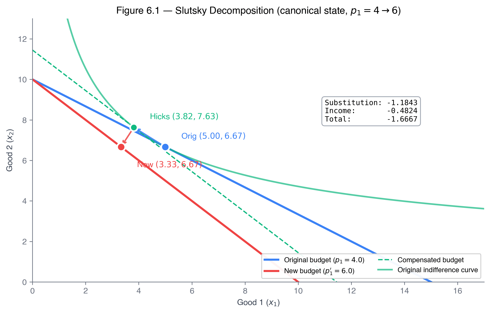
Figure 6.1 — the Slutsky decomposition in indifference-curve space.
What to look at:
- Three budget lines. Original; new (steeper after \(p_1 \uparrow\)); compensated (parallel to new, shifted to be tangent to the original indifference curve).
- Three optima. Original \((x^A)\), compensated \((x^B)\), new \((x^C)\).
- Substitution arrow runs from \(x^A\) to \(x^B\) along the original indifference curve: pure relative-price reallocation.
- Income arrow runs from \(x^B\) to \(x^C\): parallel inward shift, no slope change — pure loss of real income.
Sub. always \(\leq 0\) along original IC for own-price; income depends on sign of \(\partial x_1/\partial I\).
Walkthrough 6.1 — Sam's streaming subscriptions: setup
Problem
Sam has \$60/month for two streaming services: Netflix (\(x_1\)) at \$4/month and Spotify (\(x_2\)) at \$6/month. Preferences are Cobb-Douglas with weight \(\alpha = 1/3\) on movies: \(U = x_1^{1/3} x_2^{2/3}\). Netflix raises its price to \$6/month. Decompose the Marshallian change \(\Delta x_1^M\) into substitution and income effects.
Marshallian (from Ch 5)
\(x_1^M(p, I) = \dfrac{\alpha I}{p_1} = \dfrac{20}{p_1}.\)
At \(p_1=4\): \(x_1^M = 5\) Netflix subs.
At \(p_1'=6\): \(x_1^{M\prime} = 3.33\) subs.
Total \(\Delta x_1^M = -1.67\) subs.
Hicksian (from Slide 14)
\(h_1(p, \bar u) = \bar u \left(\dfrac{p_2}{2 p_1}\right)^{2/3}.\)
Original utility: \(\bar u_0 = U(5, 20/3) = 5^{1/3} (20/3)^{2/3} \approx 6.06.\)
At new prices: evaluate \(h_1(6, 6, 6.06)\) (next slide).
Plan: compute Sam's compensated Netflix bundle at the new prices, then split \(\Delta x_1^M\) using the Slutsky equation.
Walkthrough 6.1 — solve: \(-1.67 = -1.18 + (-0.48)\)
Compensated bundle \(A'\) at new prices
\(h_1(6, 6, \bar u_0) = 6.058 \cdot (6/12)^{2/3} = 6.058 \cdot 0.630 = 3.82.\)
Substitution effect (\(A \to A'\)):
\(h_1 - x_1 = 3.82 - 5 = -1.18\) subs.
Sam would cut 1.18 Netflix subs even if compensated to stay on his original indifference curve — Spotify is now relatively cheaper.
New Marshallian bundle \(B\)
\(x_1^{M\prime} = 20/6 = 3.33\) Netflix subs at the new income-binding budget.
Income effect (\(A' \to B\)):
\(x_1^{M\prime} - h_1 = 3.33 - 3.82 = -0.48\) subs.
Netflix is normal — income loss reinforces the substitution cut.
Check: \(\Delta x_1^M = -1.67 \;=\; \underbrace{-1.18}_{\text{sub (71\%)}} + \underbrace{-0.48}_{\text{inc (29\%)}}. \;\checkmark\)
HeadsUp 6.1 — own-price substitution is always \(\leq 0\)
The Hicksian law of demand. For any consumer with smooth, locally non-satiated preferences, the own-price substitution effect satisfies
\[\frac{\partial h_i(p, \bar u)}{\partial p_i} \;\leq\; 0.\]
Why
Falls out of concavity of \(e(p, \bar u)\) in \(p\): the diagonal of the Hessian of a concave function is \(\leq 0\). Shephard's lemma converts that into \(\partial h_i/\partial p_i \leq 0\).
Why students miss this
They confuse it with the Marshallian \(\partial x_i^M/\partial p_i\), which can be positive (Giffen good). The point of the decomposition: substitution always pulls demand down; income can push it up enough to overpower substitution.
Operational consequence. If you ever derive a substitution effect with the “wrong” sign, you have a sign error in the algebra. Use this as a self-check on every Slutsky computation.
Walkthrough 6.2 — Ana's boba tea: setup
Problem
Ana has \$20/week for boba tea (\(x_1\), cups) at \$1 each and “everything else” (\(x_2\), \$1 per dollar). Her preferences are quasilinear: \(U = 6\sqrt{x_1} + x_2\). The boba price doubles from \$1 to \$2 per cup. Show that the income effect on Ana's boba is exactly zero.
FOC for interior optimum
\(MU_1 = 3/\sqrt{x_1};\) tangency: \(3/\sqrt{x_1} = p_1/p_2,\) so
\(x_1^M(p_1, p_2) = \left(\dfrac{3 p_2}{p_1}\right)^2.\)
Crucial observation
\(x_1^M\) does not depend on \(I\). So \(\dfrac{\partial x_1^M}{\partial I} = 0\). The Slutsky income term vanishes.
All extra income gets absorbed by \(x_2\) (the numeraire “money for everything else”). Ana's boba demand is income-inelastic at zero — the defining feature of quasilinear preferences.
Walkthrough 6.2 — solve: Hicksian = Marshallian, \(CV = \$4.50\)
Marshallian change in boba:
\(\Delta x_1^M = 2.25 - 9 = -6.75\) cups.
Income effect
\(\Delta x_1^{inc} = - x_1 \cdot \dfrac{\partial x_1^M}{\partial I} = 0.\)
Zero, because \(x_1^M\) is income-independent.
Substitution effect
\(\Delta x_1^{sub} = -6.75 - 0 = -6.75\) cups.
The full Marshallian response IS the substitution effect.
Compensating variation. \(e(2, 1, 29) = 2\cdot 2.25 + 20 = 24.50\), so \(CV = 24.50 - 20 = \$4.50\) — the extra income Ana would need to stay on her original IC.
Generalization. For any quasilinear \(U = \phi(x_1) + x_2\), Marshallian and Hicksian demand for good 1 coincide. The CV equals the area to the left of that single demand curve — the cleanest welfare measure available, and the structural assumption that makes the Ch 2 consumer-surplus integral the right welfare metric.
Poll #3: Zero income effect on good 1
If \(\partial x_1^M/\partial I = 0\) for good 1, the Slutsky equation tells us that…
60 sec to vote
Answer: A — Marshallian and Hicksian coincide
\[\frac{\partial x_1^M}{\partial p_j} = \frac{\partial h_1}{\partial p_j} - x_j \cdot \underbrace{\frac{\partial x_1^M}{\partial I}}_{= \,0} \;=\; \frac{\partial h_1}{\partial p_j}.\]
Distractors: B confuses zero income effect with inferior; C confuses income elasticity with price elasticity; D mixes Slutsky with the CV formula (which needs a definite integral, not just Slutsky).
Bridge — the algebra dictates the taxonomy
The Slutsky equation has two sign-bearing pieces. Substitution is always \(\leq 0\) (own-price). Income can be either sign depending on \(\partial x_i^M/\partial I\). Six logical combinations — only three matter for the Marshallian curve's slope:
Normal good
\(\partial x_i^M/\partial I > 0.\) Income effect reinforces substitution. Marshallian demand falls when \(p_i\) rises.
Inferior good
\(\partial x_i^M/\partial I < 0.\) Income effect opposes substitution; sub. dominates. Marshallian still slopes down.
Giffen good
\(\partial x_i^M/\partial I < 0\) AND large enough that income overpowers substitution. Marshallian slopes up.
Part 4 builds the taxonomy with three figures, three walkthroughs, and three HeadsUps.
PART 4 · §6.4 Sign classification: normal, inferior, Giffen
35 min · Three categories, three walkthroughs (Carlos, Chen family, Maya), two HeadsUps
Figure 6.3 — the sign-pattern map
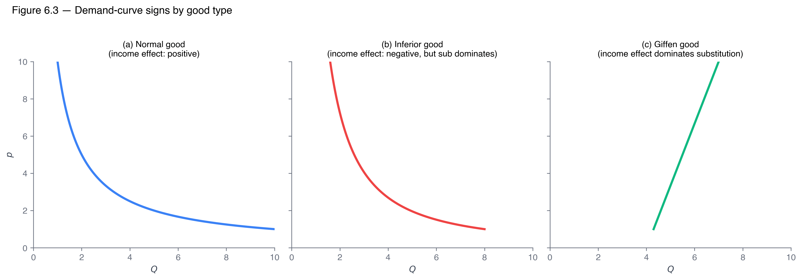
Figure 6.3 — sign of income effect determines the category.
The taxonomy in one picture:
- Normal & ordinary. Sub \(\leq 0\), income \(\leq 0\). Both arrows point the same way. The textbook case — coffee, apartments, smartphones.
- Inferior & ordinary. Sub \(\leq 0\), income \(\geq 0\) but smaller in magnitude. Sub. wins. Bus rides relative to Ubers; store-brand canned soup relative to fresh produce (Carlos's case).
- Giffen. Sub \(\leq 0\), income \(\geq 0\) and larger. Marshallian curve slopes up. Real, rare, requires subsistence + low income.
Statistically: ~80% of goods are normal, ~20% inferior, < 1% Giffen.
Figure 6.2 — Marshallian vs. Hicksian for a normal good
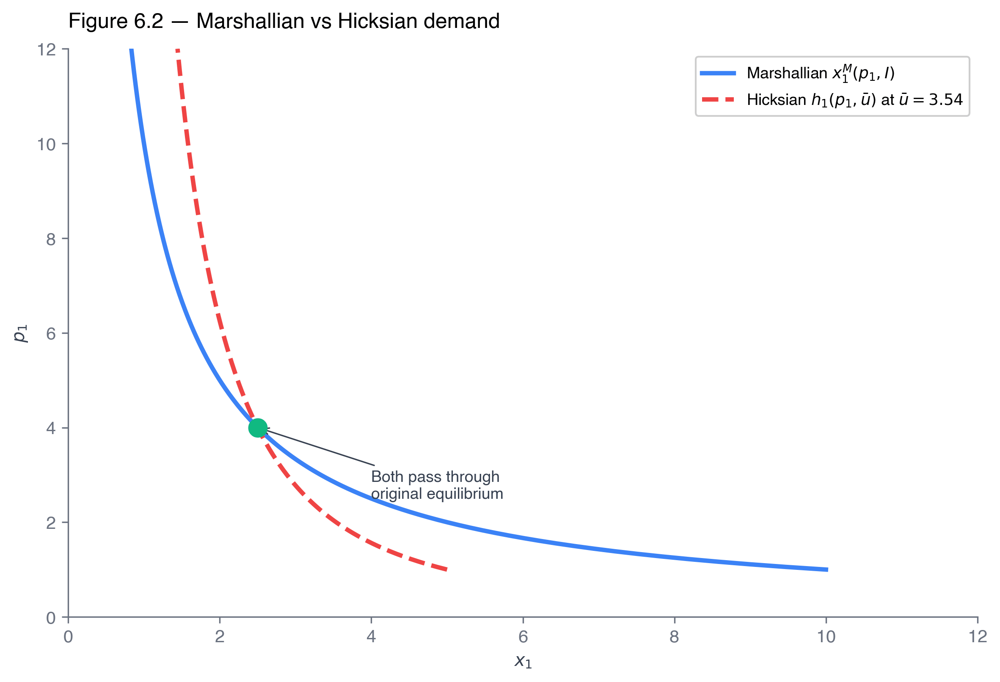
Figure 6.2 — Marshallian (solid) sits below Hicksian (dashed) above the reference price.
For a normal good, the income effect reinforces substitution: when \(p_1\) rises, the consumer is also poorer, so they cut \(x_1\) further than they would have at fixed utility.
Visual diagnostic. Above the reference price, the Marshallian curve lies below Hicksian. Below the reference price, Marshallian lies above. The two curves cross at the original price.
Empirical takeaway. For a normal good, Marshallian elasticity is larger in magnitude than Hicksian. The compensated (Hicksian) elasticity is the pure substitution channel; published price elasticities are typically Marshallian.
…and for an inferior good
Inferior & non-Giffen
Income effect opposes substitution; substitution still dominates. Marshallian still slopes down, but less steeply than Hicksian.
Visual flip: Marshallian sits above Hicksian above the reference price — the consumer is poorer after \(p_1 \uparrow\), and being poorer makes them want more of the inferior good (partially offsetting substitution).
Giffen
Income effect opposes substitution and wins. Marshallian slopes up. Hicksian still slopes down (Hicksian law of demand).
Empirical signature: a good that is a large share of a low-income household's budget, where income falling forces them to switch toward the good rather than away.
Numerical preview. The next two walkthroughs make this concrete: W6.3 (inferior — Carlos's store-brand canned soup) and W6.4 (Giffen — the Chen family in Hunan). Watch how the income-effect sign drives whether \(\Delta x_1^M\) is bigger or smaller than \(\Delta x_1^{sub}\).
Walkthrough 6.3 — Carlos's store-brand canned soup: setup
Problem
Carlos runs a tight \$5{,}000/month household budget. Store-brand canned soup (\(x_1\), cans/mo) at \$4 each; pantry alternatives (\(x_2\)) at \$8 average. A CEX regression on his consumption gives
\(x_1(p_1, p_2, I) = 30 - 2 p_1 + 0.5 p_2 - 0.001\, I.\)
At baseline \((p_1, p_2, I) = (4, 8, 5{,}000)\): \(x_1 = 21\) cans/mo. The store raises canned soup to \(p_1' = \$6\). Decompose Carlos's response.
Partials read from the demand fn
- Marshallian own-price: \(\partial x_1/\partial p_1 = -2\) cans/\$.
- Income: \(\partial x_1/\partial I = -0.001\) — negative \(\Rightarrow\) inferior. A \$1{,}000 raise cuts soup by 1 can/mo.
- \(\Delta p_1 = +\$2\).
No utility function needed
Slutsky decomposes the price effect from observable demand-function partials alone — how empirical demand analysis actually works. We need only \(\partial x_1/\partial p_1\), \(\partial x_1/\partial I\), and \(x_1\) at the baseline.
Plan: apply differential Slutsky to get \(\partial h_1/\partial p_1\), then scale up to the discrete \$2 price change (linear demand ⇒ exact).
Walkthrough 6.3 — solve: sub. dominates the perverse income term
Step 1 — total Marshallian effect
At \((p_1', p_2, I) = (6, 8, 5{,}000)\): \(x_1' = 30 - 12 + 4 - 5 = 17\) cans/mo.
\(\Delta x_1^M = 17 - 21 = -4\) cans.
Step 2 — Slutsky for substitution slope:
\(\dfrac{\partial h_1}{\partial p_1} = \dfrac{\partial x_1}{\partial p_1} + x_1 \cdot \dfrac{\partial x_1}{\partial I}\)
\(= -2 + 21 \cdot (-0.001) = -2.021\) cans/\$.
Step 3 — scale to \(\Delta p_1 = 2\) (linear ⇒ exact):
• Substitution: \(-2.021 \cdot 2 = -4.042\) cans
• Income: \(-21 \cdot (-0.001) \cdot 2 = +0.042\) cans
Sum: \(-4.042 + 0.042 = -4.000\) ✓
Check. Sub. negative (Hicksian law). Income positive (inferior good signature). Substitution dominates by ~100× — Marshallian still slopes down.
Punchline. Inferior \(\neq\) Giffen. Substitution (\(-4.042\)) dominates the perverse income term (\(+0.042\)); Marshallian falls from 21 to 17 cans. For a Giffen, the income effect must be much larger — that's W6.4 (the Chen family in Hunan).
Figure 6.9 — how a Giffen good can exist
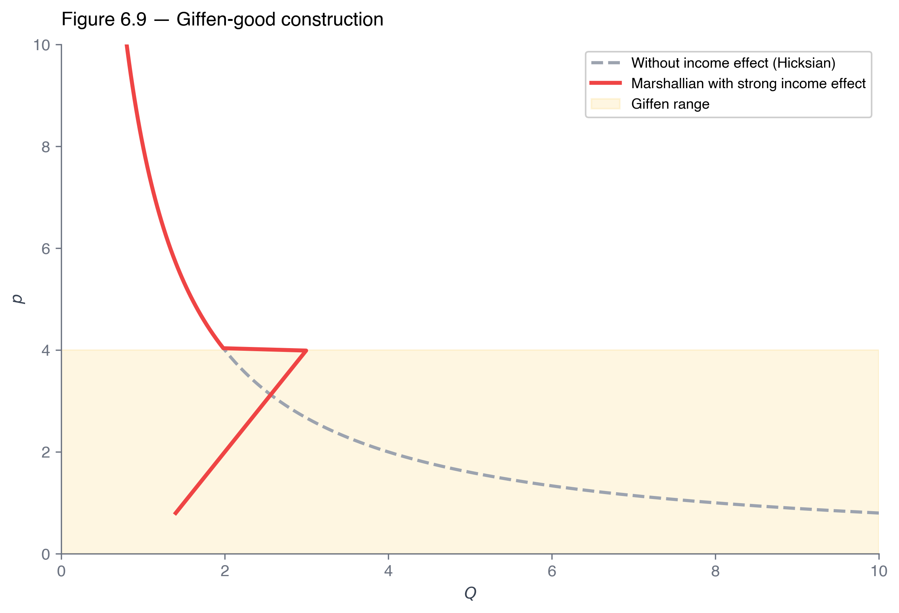
Figure 6.9 — the geometry of a Giffen good.
What makes a Giffen good possible:
- Good 1 is strongly inferior (large \(|\partial x_1^M/\partial I|\)).
- Good 1 is a large share of the consumer's budget (large \(x_1 \cdot p_1 / I\)).
- Consumer is near a subsistence constraint (a fall in real income forces them to buy more of the cheap-but-filling good).
Real-world example. Jensen & Miller (2008, AER) calibrated rice subsidies in Hunan, China; some low-income households exhibited Giffen behavior on rice. Replicated by field experiment, not just observation.
Walkthrough 6.4 — The Chen family and Hunan rice: setup
Problem
The Chen family farms in rural Hunan on \$100/mo cash income. Rice (\(x_1\), kg/mo) at \$2/kg; meat + vegetables (\(x_2\)) at \$4 per item. Jensen-Miller's randomized rice-subsidy experiment gives a calibrated demand
\(x_1(p_1, p_2, I) = 47 + 0.5\, p_1 - 2\, p_2 - 0.02\, I.\)
At baseline \((2, 4, 100)\): \(x_1 = 38\) kg/mo — rice consumes \$76 of the family's \$100 budget. Rice rises to \$3/kg. Show the family buys more rice (Giffen!) and decompose.
Partials at baseline
- \(\partial x_1/\partial p_1 = +0.5\) — positive! Marshallian curves the wrong way.
- \(\partial x_1/\partial I = -0.02\) — deeply inferior (a \$100 raise cuts rice by 2 kg/mo).
- Rice budget share: \(p_1 x_1 / I = 76\%\) at baseline.
Three Giffen ingredients
(i) deeply inferior staple, (ii) low-income subsistence-constrained household, (iii) exogenous price variation (Jensen-Miller's randomized subsidies). All three present here. Plan: verify the substitution effect is still \(\leq 0\), but the income effect dominates.
Walkthrough 6.4 — solve: income wins 3-to-1, slope reverses
Step 1 — total Marshallian effect
At \((p_1', p_2, I) = (3, 4, 100)\): \(x_1' = 47 + 1.5 - 8 - 2 = 38.5\) kg/mo.
\(\Delta x_1^M = +0.5\) kg — Giffen confirmed.
Substitution slope (Slutsky):
\(\dfrac{\partial h_1}{\partial p_1} = 0.5 + 38 \cdot (-0.02) = -0.26\) kg/\$.
Still negative — Hicksian law of demand holds.
Discrete decomposition for \(\Delta p_1 = 1\):
• Substitution: \(-0.26\) kg
• Income: \(-38 \cdot (-0.02) \cdot 1 = +0.76\) kg
Sum: \(-0.26 + 0.76 = +0.50\) ✓
Income effect overpowers substitution by roughly 3-to-1 — the Chen family leans harder into the cheap staple as it gets relatively more expensive.
Giffen verified: \(\Delta x_1^M = +0.50 \;=\; \underbrace{-0.26}_{\text{sub (theory holds)}} + \underbrace{+0.76}_{\text{income dominates}}.\)
Hicksian demand still slopes down (theorem), but the Chen family's observed (Marshallian) rice demand rises with the rice price. Both true simultaneously.
HeadsUp 6.2 — what “compensated” means
“Compensated demand” means utility is held constant, not income. Students consistently swap these.
Hicksian (compensated)
Fix the utility floor \(\bar u\). As prices change, the income required to reach \(\bar u\) changes — that's exactly \(e(p, \bar u)\). The consumer is “compensated” for the price change with whatever income keeps them on the same indifference curve.
NOT “income-held-constant”
Marshallian demand is income-held-constant: fix \(I\), let utility float. That's the consumer's actual behavior. The Hicksian thought experiment is the opposite: fix utility, let income float.
Mnemonic. Hicksian = “Hold utility”. Marshallian = “Money fixed”. The two coincide at one point (the original \((p, I)\)) and diverge as relative prices change.
HeadsUp 6.3 — spotting Giffen behavior in real data
Identifying a Giffen good empirically requires more than a positively sloped scatter of price vs. quantity in observational data.
Three preconditions (Jensen-Miller protocol)
- Households near subsistence (energy/nutrition constraint binding).
- Good is a large share of expenditure (typically > 30%).
- Good is the cheapest source of the necessary nutrient/service.
Confounders to rule out
- Supply shocks moving \(p\) and \(x\) along an upward-sloping supply curve.
- Quality changes mistaken for price changes.
- Veblen goods (status signaling) — demand rises with price for prestige, not subsistence.
The randomized-control standard. Jensen-Miller passed because they exogenously varied rice prices via subsidies, ruling out supply confounders. A scatter plot alone cannot identify Giffen.
Figure 6.5 — Maya's wage Slutsky
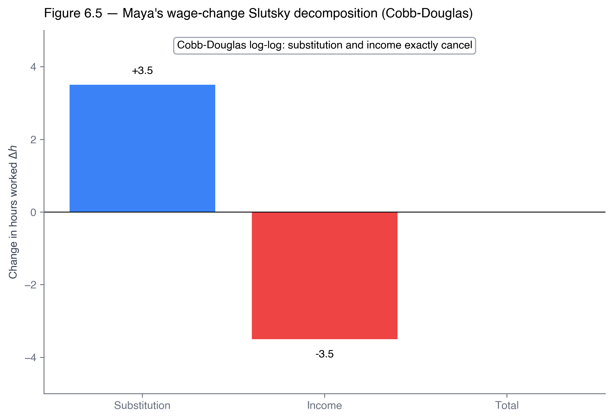
Figure 6.5 — Maya's labor-leisure Slutsky on a wage rise.
Recap from Ch 5.
Maya, freelance designer. Cobb-Douglas-log utility \(U = \log c + \beta \log \ell\). Three-use time budget \(\{60, 96, 732\}\). Wage rises from \(w = 18\) to \(w' = 24\) per hour.
Labor supply = total endowment minus leisure. We can decompose the change in hours worked using exactly the same Slutsky machinery — wage acts as the “price of leisure”.
Recurring thread: third use across the 2316 sequence. First appearance: Ch 4 (preferences). Second: Ch 5 (Lagrangian on the time budget). Today: Slutsky. Closes in Ch 19 (monopsony).
Walkthrough 6.5 — Maya's labor-leisure Slutsky: setup
Problem
From Ch 5: Maya allocates 97 discretionary hours/wk among studying \(s\), freelance work \(h\), and leisure \(\ell\), with utility \(U = 60\, g(s) + 96 \ln(wh) + 732 \ln \ell\). At \(w = \$18\)/hr the Lagrangian optimum is \((s^{\ast}, h^{\ast}, \ell^{\ast}, \lambda^{\ast}) = (28, 8, 61, 12)\). Her wage rises to \(w' = \$24\)/hr.
Decompose the change in Maya's labor supply \(h\) into substitution and income effects.
Hold \(s = 28\), recast as money budget
Sub-problem on \(h + \ell = 69\): with \(c \equiv wh\) (price 1), leisure priced at \(w\). Full-income budget: \(c + w\ell = 69 w\). Sub-utility \(96 \ln c + 732 \ln \ell\) is Cobb-Douglas-log.
Marshallian labor (key observation)
FOCs give \(h^M = 96/\lambda = 8\) hr regardless of \(w\). Marshallian wage elasticity of labor supply is exactly zero. The Slutsky decomposition will reveal two nonzero offsetting channels.
Walkthrough 6.5 — +2 sub, −2 inc, zero net
Compensated hours at \(w' = 24\), \(\bar u_0\)
MRS \(= w'\) plus the utility constraint give \(c^H = 185.78\), \(\ell^H = 59.00\), so \(h^H = 69 - 59 = 10\) hr.
Substitution effect on \(h\):
\(h^H - h^M(w=18) = 10 - 8 = +2\) hr/wk.
Leisure costs \$24 instead of \$18 per hour — Maya supplies more labor at fixed utility.
New Marshallian hours at \(w' = 24\)
Full income now \(69 \cdot 24 = 1{,}656\); shares give \(c^M = 192\), \(\ell^M = 61\), \(h^M = 8\) hr.
Income effect on \(h\):
\(h^M(w'=24) - h^H = 8 - 10 = -2\) hr/wk.
Higher real income ⇒ more leisure (normal) ⇒ less labor.
\(\Delta h^M = \underbrace{+2}_{\text{sub}} + \underbrace{-2}_{\text{inc}} = 0\) hr/wk — knife-edge cancellation.
Why it's a knife edge. Cobb-Douglas-log preferences produce exact cancellation. Less leisure-curvature ⇒ substitution wins (upward-sloping labor supply); more curvature ⇒ income wins (backward-bending). Maya's calibration sits on the cusp — reactivates in Ch 19 monopsony.
Think-pair-share #1 — Identifying Giffen empirically
In your group, design an empirical study:
- What data would you collect to identify whether a particular good is Giffen for a specific population?
- How would your design rule out the three confounders from HeadsUp 6.3 (supply shocks, quality changes, Veblen)?
Think 90s · Pair 90s · Random call × 2
Press ↓ to reveal sample answers.
Bloom L5 — Apply
TPS #1 — Sample answers
Q1 — Data design
Panel data on low-income households at or near subsistence, with random variation in own-price of the candidate good (subsidies, vouchers, randomized retail discounts). Need pre/post quantity demanded plus income/expenditure totals to estimate \(\partial x_1^M/\partial I\) separately.
Q2 — Ruling out confounders
Supply shocks: use randomized subsidies, not market price moves. Quality changes: verify the good's attributes are constant across treatment arms. Veblen: select on subsistence-constrained populations where status signaling is implausible. Jensen-Miller did all three.
Pattern. Identifying Slutsky-violating behavior empirically is hard; you need EXPERIMENTAL variation in price. Observational scatter plots are not enough.
FYI — the Slutsky structure in 2024 data
App 6.1 · Gas 2022
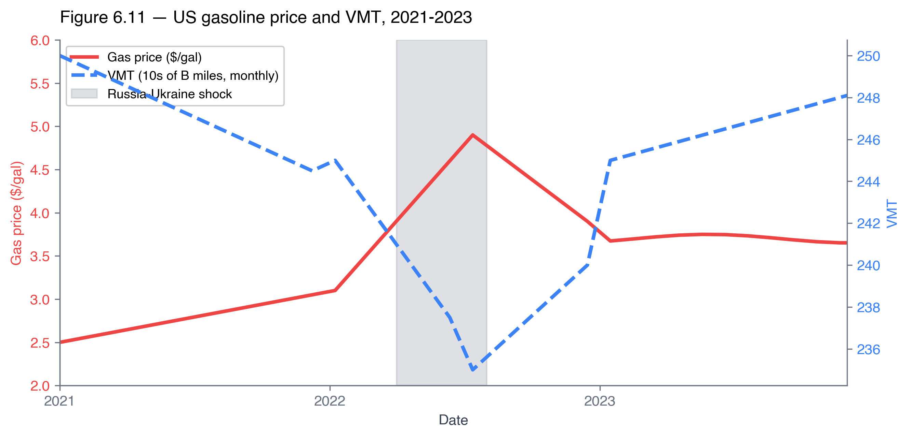
Kilian-Zhou 2024: \(\varepsilon_D \in [-0.31, -0.20]\). Stronger in low-income states — income channel.
T&D 6.1 · Engel BLS 2024
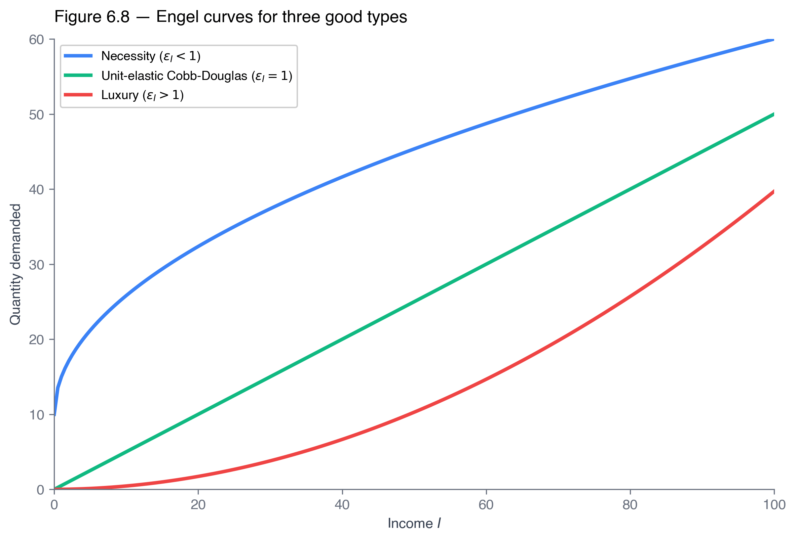
Food share: 32.6% (Q1) → 8.1% (Q5). Engel's law — the cleanest income-elasticity pattern in the data.
T&D 6.2 · Elasticities
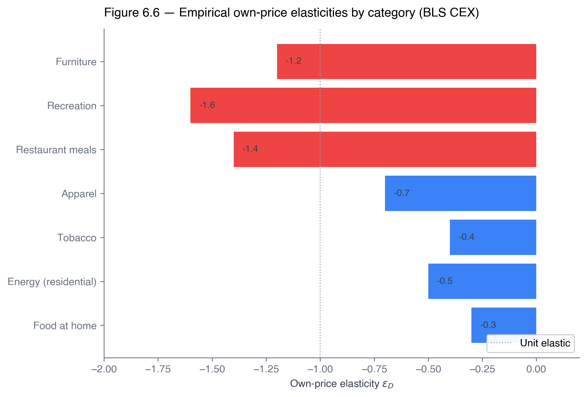
Marshallian \(\varepsilon_D\) bigger in magnitude than Hicksian — predicted by Slutsky for normal goods.
The Slutsky equation is not a derivation, it is a structural prediction — observed Marshallian elasticities should equal Hicksian elasticities minus the income-weighted income elasticity. All three of these literatures confirm the pattern at the household-survey level (CEX) and the regional-aggregate level (Kilian-Zhou).
PART 5 · Wrap & Forward-Pointers
15 min · Poll 4, summary, §6.5–6.8 forward-pointers, Ch 7 bridge
Poll #4: The 2022 US gas spike
US gasoline demand fell roughly 5–10% during the 2022 spike. Based on Kilian-Zhou 2024's decomposition, that fall was driven mostly by…
60 sec to vote
Answer: C — roughly equal, but income concentrated in low-income states
Kilian-Zhou 2024: aggregate Marshallian \(\varepsilon_D \approx -0.31\), Hicksian \(\approx -0.20\). The 35% gap is the income channel. In states with high gas-budget-share households, the income channel is closer to 50% of total.
Policy takeaway. A cash transfer targeted to low-gas-budget-share households would address the income channel without distorting the conservation incentive. A gas price cap would do the opposite.
Forward-pointer — §6.5 Roy, Shephard, duality table
Roy's identity
\[x_i^M = -\dfrac{\partial v / \partial p_i}{\partial v / \partial I}.\]
Recover Marshallian demand from indirect utility — one partial derivative ratio.
Shephard's lemma
\[\dfrac{\partial e}{\partial p_i} = h_i.\]
Recover Hicksian demand from expenditure function — we used it once today in the Slutsky derivation (Slide 19, Step 2).
The duality table. Four objects (\(U,\, v,\, e,\, x^M,\, h\)) and the partial-derivative identities that move between them. Read in §6.5 of the manuscript — we will use it when we get to welfare in Ch 8.
Walkthroughs 6.6 (Roy) and 6.7 (Shephard) verify both identities for Sam's Netflix demand — same algebra as Slide 14.
Forward-pointers — §6.6 / 6.7 / 6.8 + Ch 7
§6.6 · Market demand
Horizontal sum of individual demands. Sonnenschein-Mantel-Debreu warning: aggregation does not preserve representative-agent structure in general.
§6.7 · Compensating variation
Dollar value of a price change, measured along the Hicksian demand curve. Full development in Ch 8 (welfare).
§6.8 · Behavioral deviations
Reference dependence, Slutsky symmetry violations. Forward-pointers to Ch 15 (uncertainty) and Ch 16 (asymmetric info).
Ch 7 · Production Functions
The firm's analog of utility max. Isoquants replace indifference curves; cost min mirrors expenditure min. Lagrangian carries over verbatim.
The Slutsky equation is the conceptual peak of Part II (Consumer Theory). Part III (Production) reuses the entire dual-problem machinery — expenditure min becomes cost min; Hicksian demand becomes conditional input demand.
Summary — the four demand-system objects
| Object | Symbol | What's held fixed | Cobb-Douglas \(\alpha = 1/3\) |
|---|---|---|---|
| Marshallian demand | \(x_i^M(p, I)\) | Income \(I\) | \(\alpha I / p_1 = 20/p_1\) |
| Hicksian demand | \(h_i(p, \bar u)\) | Utility \(\bar u\) | \(\bar u (p_2/(2 p_1))^{2/3}\) |
| Indirect utility | \(v(p, I)\) | Income \(I\), prices | \((I/p_1)^{1/3}(I/p_2)^{2/3}\) (mod. constant) |
| Expenditure function | \(e(p, \bar u)\) | Utility \(\bar u\), prices | \(\bar u (p_1/\alpha)^{1/3}(p_2/(1-\alpha))^{2/3}\) |
| Slutsky decomposition | \(\partial x_i^M/\partial p_j\) | \(= \partial h_i/\partial p_j - x_j \partial x_i^M/\partial I\) | W6.1 (Sam): \(-1.67 = -1.18 + (-0.48)\) |
All five rows commit to homework problems 1–6. Roy's identity recovers row 1 from row 3; Shephard's lemma recovers row 2 from row 4.
Key takeaways
- The Slutsky equation decomposes any Marshallian price response into substitution (Hicksian, fixed utility) and income (Marshallian, \(x_j \cdot \partial x_i^M / \partial I\)) effects.
- The expenditure function \(e(p, \bar u)\) is concave in \(p\), non-decreasing in each argument, HOD 1 in \(p\). Its derivative in \(p_j\) is Hicksian demand — Shephard's lemma.
- Own-price Hicksian demand is always \(\leq 0\). Marshallian own-price effect can flip sign for inferior + budget-share-heavy + subsistence goods — the Giffen good.
- Maya's knife-edge: with Cobb-Douglas-log preferences, substitution and income exactly cancel on a wage change — Marshallian labor supply has zero elasticity. Real labor-supply data (Sigurdsson 2025) shows non-zero Marshallian elasticity \(\approx 0.1\); the gap is utility-function shape.
- Policy. Price subsidies and cash transfers are not equivalent. The Slutsky structure tells you which channel each policy targets and which households benefit most.
Key terms
- Marshallian demand \(x_i^M(p, I)\)
- Hicksian (compensated) demand \(h_i(p, \bar u)\)
- Expenditure function \(e(p, \bar u)\)
- Indirect utility \(v(p, I)\)
- Duality identity
- Slutsky equation
- Substitution effect
- Income effect
- Normal good / inferior good / Giffen good
- Engel curve
- Roy's identity (forward, §6.5)
- Shephard's lemma (forward, §6.5)
- Compensating variation (forward, §6.7)
- Compensated vs. income-held-constant
All terms defined inline at first appearance in the chapter; consolidated glossary in textbook end-matter.
Exit ticket — before you leave
On the index card (or Canvas Quick Quiz):
- Write the Slutsky equation for a single price change \(\partial x_1^M / \partial p_1\) in plain symbols and identify which term is always negative.
- Why is rice a candidate Giffen good for the Chen family (low-income Hunan) but not for a middle-class American household? Give the two ingredients in one sentence each.
Drop on the way out, or submit on Canvas before 11:59 PM. Counts toward attendance.
Resources for going deeper
Textbook anchors
- Goolsbee, Levitt, Syverson 4e — Ch 5 (income/substitution effects)
- Mas-Colell, Whinston, Green — Ch 3.D, 3.E (Hicksian demand, Slutsky)
- Varian Intermediate Microeconomics — Ch 8
Math + visual
- Math Appendix B.3–B.4 (envelope theorem, duality proof)
- Math Appendix C.6 (Slutsky identification methodology)
- Khan Academy — "Substitution and income effects" video
Empirical anchors
- BLS Consumer Expenditure Survey (Engel-curve data)
- Kilian-Zhou 2024 — US gas demand decomposition
- Levell-O'Connell-Smith 2024 — UK energy elasticities (IFS / Cowles WP)
Frontier papers
- Jensen & Miller (2008, AER) — Hunan rice Giffen field experiment
- Sigurdsson (2025, AEJ:Policy) — labor-supply Frisch elasticity
- Deaton (1997) — analysis of household surveys (classic reference)
Next class — Ch 7: Production Functions
Bring with you
- The Slutsky equation in your head, written from memory
- The Cobb-Douglas expenditure function from CC 6.1 (Slide 14)
- The duality identity \(x^M(p, e(p, \bar u)) = h(p, \bar u)\)
Pre-read
- Ch 6 §6.5–6.6 (Roy, Shephard, market demand)
- Ch 7 §7.1–7.2 (production functions, MP_L, MP_K)
- Math Appendix B.3 (envelope theorem)
HW §6 due before next class. Problems 1–5 mirror today's walkthroughs (W6.1 Sam Cobb-Douglas, W6.2 Ana quasilinear, W6.3 Carlos inferior, W6.4 Chen family Giffen, W6.5 Maya labor-leisure). Problems 6, 8 (Hicksian elasticities, sign theorems) are optional challenge.
Questions?
Office hours · Tue/Thu 2:00–3:30 pm · 308 Lake Hall
“Substitution is a theorem; income is an empirical question.” — the Slutsky lesson, in one sentence.